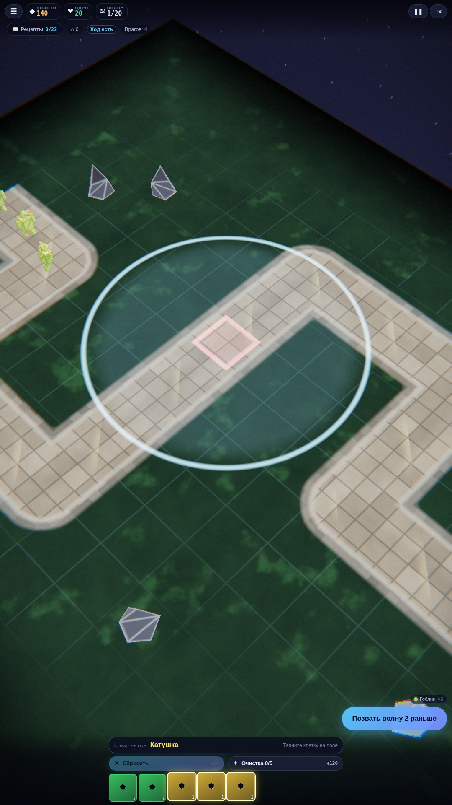
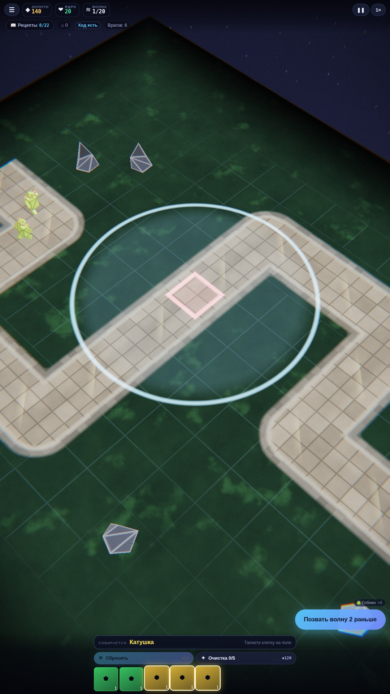
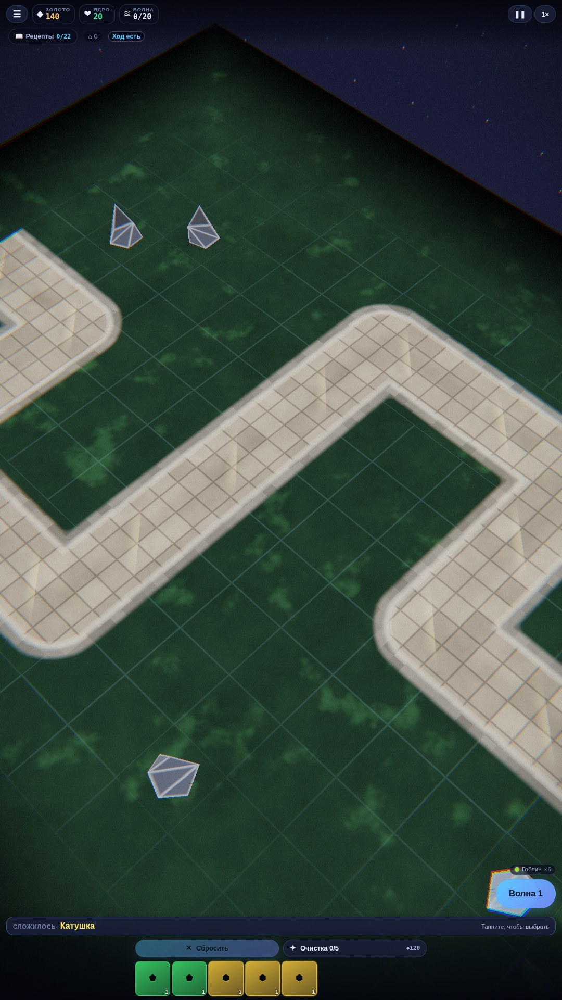
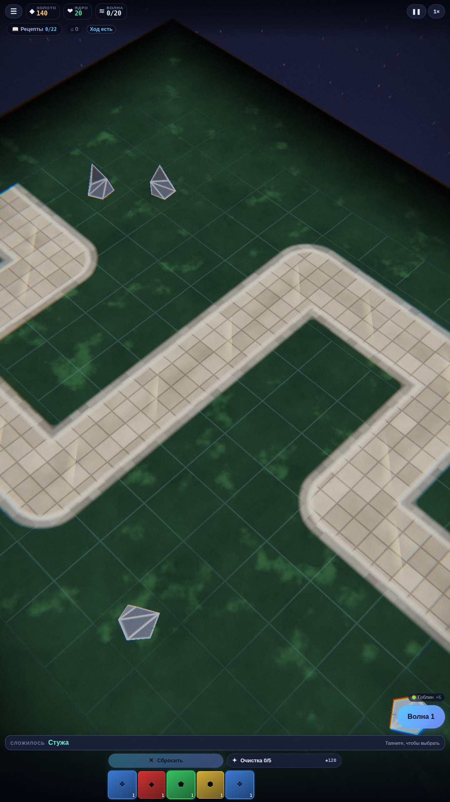

Скриншоты



Об игре
Трёхмерный tower defence без магазина башен. Башню тут нельзя выбрать — её можно только сварить из самоцветов.
Лоток внизу экрана всегда полон: пять камней, и место, освободившееся под рецепт, тут же занимает новый. Золото тратится не на то, чтобы получить камень, а на то, чтобы отказаться от ненужного. Три камня складываются в рецепт, рецепт встаёт на поле башней.
Четыре вещи делают из этого игру, а не лотерею: • уровень камня — часть рецепта: три рубина дают Искру, а три рубина повыше — уже Горнило, совсем другую башню; • повтор рецепта — это уровень башни: отдельной кнопки «улучшить» нет, собери тот же рецепт ещё раз и положи на свою же башню; • качество выпадения покупается: Очистка сдвигает распределение вверх — главный выбор партии; • ход — это волна: за ход на поле ложится ровно одна вещь, поэтому за партию у тебя будет около двадцати башен, не больше.
Шесть камней со своими стихиями, двадцать два рецепта в трёх кругах и восемь врагов, каждый со своей походкой.
Как играть
Смотри в лоток внизу. Как только из пяти камней складывается хоть один рецепт, нужные камни начинают светиться, а над лотком появляется его название — тапни по подсказке, и набор выберется целиком. Помнить таблицу из двадцати двух строк не надо.
Выбрал набор — тапни по свободной клетке поля, там встанет башня. Тот же рецепт, положенный на свою же башню, поднимет ей уровень.
Не сложилось ничего — выставь одинокий камень: осколок бьёт вполсилы, зато занимает клетку и тянет время. И он не тупик: возьми два камня из лотка, тапни по осколку — он станет третьим ингредиентом, и на его клетке встанет настоящая башня.
Сбрасывать и очищать можно сколько угодно, а ставить — один раз за ход. Волна идёт по тропе к ядру; пропустишь врага — потеряешь жизнь ядра.